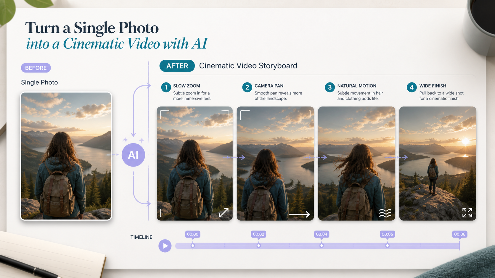

Промтзилла
Фото оживает лучше, когда движение минимальное: лёгкий зум, панорама, ветер, свет и естественная глубина работают надёжнее резкой смены сцены.

Пошаговая инструкция
- 1Выбери чёткое фото без смазанных лиц и лишних объектов.
- 2Опиши длительность ролика и формат: 9:16, 1:1 или 16:9.
- 3Попроси сохранить лицо, одежду, фон и стиль исходника.
- 4Задай одно главное движение: медленный зум, поворот камеры или лёгкий ветер.
- 5Проверь руки, лицо и края кадра: там чаще всего появляются артефакты.
Какой результат просить
Нужен короткий реалистичный фрагмент, где фото будто снято на видео, а не полностью переделано. Для старта можно использовать Study24 AI: добавь исходник, цель и ограничения, а затем попроси вариант для публикации.
Промт
RU
Создай короткое видео из этой фотографии. Параметры: — длительность: [укажи 3-8 секунд]; — формат: [16:9 / 9:16 / 1:1]; — движение камеры: медленный плавный зум и лёгкая панорама; — добавь естественное движение света, волос, одежды или фона, если это уместно. Важно: — сохрани лицо, позу, одежду, фон и стиль исходного фото; — не добавляй новых людей или предметы; — не меняй возраст и внешность; — избегай резких движений и пластиковой мимики.
EN
Create a short video from this photo. Parameters: — duration: [3-8 seconds]; — format: [16:9 / 9:16 / 1:1]; — camera motion: slow smooth zoom and slight pan; — add natural movement of light, hair, clothing, or background if appropriate. Important: — preserve the face, pose, clothing, background, and style of the original photo; — do not add new people or objects; — do not change age or appearance; — avoid abrupt movement and plastic facial animation.
Важно
Для портретов лучше просить минимальное движение: чем активнее мимика, тем выше риск странных артефактов.
Теги